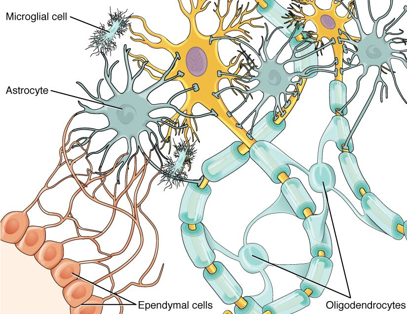

Neurons and glial cells
1Why this matters
Marco, 38, a carpenter, slices into the base of his thumb with a chisel. The surgeon finds a cut nerve, stitches its ends together and tells him feeling will creep back toward his fingertip at about a millimeter a day. Down the hall, a young woman who damaged her spinal cord in a fall hears a very different outlook: the axons cut inside her spinal cord will almost certainly not grow back. Same kind of axon, opposite outcome. The difference lies in the glial cells around them.
2What this builds on
3Quick check before you start
1. Which part of a neuron carries its signal away from the cell body?
- A dendrite
- The axon
- The nucleus
Show the answer
The axon carries the neuron's signal away from the cell body to its axon terminals. Dendrites carry incoming signals toward the cell body, and the nucleus holds the DNA.
- A dendrite:
- Correct: The axon:
- The nucleus:
2. What happens when a neuron's membrane reaches threshold?
- It fires an all-or-none action potential
- It produces a small graded potential that fades
- Its sodium–potassium pumps stop
Show the answer
Threshold is the membrane voltage at which enough voltage-gated sodium channels open to trigger an action potential. Below threshold, a change stays a graded potential. The pumps run all the time.
- Correct: It fires an all-or-none action potential:
- It produces a small graded potential that fades:
- Its sodium–potassium pumps stop:
3. Which of these is part of the peripheral nervous system?
- The spinal cord
- A nerve in the arm
- Gray matter in the brain
Show the answer
The PNS is everything outside the brain and spinal cord, including nerves and ganglia. The spinal cord and the brain's gray matter are CNS.
- The spinal cord:
- Correct: A nerve in the arm:
- Gray matter in the brain:
4Anatomy

With labels hidden, select a box to reveal its label.
5How it works, step by step
- A chisel cuts through an axon in a peripheral nerve.The part beyond the cut loses its supply of proteins from the cell body and breaks down within days, along with its myelin.
- Schwann cells in the damaged segment break down their myelin and call in macrophages from the blood.The debris is cleared within a few weeks, leaving the connective tissue tube around each axon empty.
- With the debris gone, the Schwann cells multiply.They line up inside the empty tube, forming a regeneration tube coated with growth-promoting proteins.
- The cell body, still alive, ramps up protein synthesis, and sprouts grow from the cut end of the axon.A sprout that enters the regeneration tube is guided along it at about 1 millimeter per day.
- The regrowing axon reaches its target.Schwann cells wrap it in new myelin, and function can return. In the CNS, oligodendrocytes form no such tube, and the astrocyte scar and myelin proteins block regrowth.
6Core concepts
7A common mistake
The wrong idea: Nerve cells can never grow back once they are damaged.
What actually happens: A neuron that dies is not replaced, because mature neurons do not divide. But a cut axon is a different matter: as long as its cell body survives, the axon can regrow. In the PNS it often does, at about a millimeter a day, guided by a tube of Schwann cells. In the CNS it usually does not, mainly because of the surroundings: oligodendrocytes form no guiding tube, CNS myelin contains proteins that stop growing axons, and astrocytes seal the injury with a scar. CNS axons given a graft of peripheral nerve to grow through can regrow for centimeters.
8Check yourself
Anything you miss goes into your review queue.
1. Name the pinned glial cell.
- Oligodendrocyte
- Microglial cell
- Astrocyte
- Ependymal cell
Show the answer
The star-shaped cell with many branching processes reaching out to the neurons is an astrocyte.
- Oligodendrocyte: Oligodendrocytes have a few arms that end in myelin wraps around axons, not many fine star-like processes.
- Microglial cell: Microglial cells are small, with short, fine, bristly processes. This cell is large and star-shaped.
- Correct: Astrocyte: Correct. Its star shape gives the astrocyte its name (astr- = star).
- Ependymal cell: Ependymal cells form a single layer lining a fluid-filled space. This cell sits among the neurons.
2. Researchers map the density of voltage-gated sodium channels along a neuron. Where do they expect the highest density, and where do action potentials start?
- In the axon's initial segment
- On the dendrites, where signals arrive
- In the soma, beside the nucleus
- In the axon terminals
Show the answer
The initial segment has the densest voltage-gated sodium channels, so it reaches threshold before any other part of the neuron. It is the trigger zone, where action potentials begin.
- Correct: In the axon's initial segment: Correct. The initial segment is packed with voltage-gated sodium channels and acts as the trigger zone.
- On the dendrites, where signals arrive: Dendrites have relatively few voltage-gated sodium channels and mostly carry graded potentials.
- In the soma, beside the nucleus: The soma's membrane has far fewer voltage-gated sodium channels than the initial segment.
- In the axon terminals: Axon terminals release neurotransmitter at the far end of the axon. Action potentials arrive there; they do not start there.
3. A neuron lies entirely inside the spinal cord. It receives signals from a sensory neuron's axon terminals and passes them on to a motor neuron. What kind of neuron is it?
- A motor neuron
- A sensory neuron
- A glial cell
- An interneuron
Show the answer
A neuron entirely within the CNS that connects other neurons is an interneuron. Interneurons do the integrating, and they are by far the most numerous neurons.
- A motor neuron: A motor neuron sends its axon out of the CNS to an effector. This one stays inside the spinal cord.
- A sensory neuron: A sensory neuron carries signals in from a sensory receptor, and its soma lies in a ganglion outside the CNS.
- A glial cell: Glial cells support neurons but do not pass signals from one neuron to another. This cell is a neuron.
- Correct: An interneuron: Correct. Interneurons connect other neurons inside the CNS.
4. A researcher traces the arms of one glial cell in the white matter of the brain and finds that it has wrapped myelin around segments of 30 different axons. Which cell is it?
- A Schwann cell
- An astrocyte
- A satellite cell
- An oligodendrocyte
Show the answer
Only oligodendrocytes myelinate segments of many different axons, one per arm, and they are found in the CNS, which includes the brain's white matter.
- A Schwann cell: A Schwann cell myelinates a single segment of a single axon, and it works in the PNS, not the brain.
- An astrocyte: Astrocytes regulate the fluid around neurons and wrap capillaries. They do not make myelin.
- A satellite cell: Satellite cells cover neuron cell bodies in PNS ganglia. They do not make myelin.
- Correct: An oligodendrocyte: Correct. One oligodendrocyte can myelinate segments of dozens of axons.
5. Put the events of peripheral nerve regeneration in order, starting from the cut.
- The part of the axon beyond the cut breaks down, along with its myelin
- Schwann cells and macrophages clear the debris
- Schwann cells multiply and line up to form a regeneration tube
- A sprout from the cut end grows along the tube at about 1 mm per day
- The axon reaches its target and Schwann cells wrap it in new myelin
Show the answer
The far segment degenerates, its debris is cleared, Schwann cells build a guiding tube, the axon regrows along it, and it is remyelinated when it reaches its target.
- Correct order: 1. The part of the axon beyond the cut breaks down, along with its myelin 2. Schwann cells and macrophages clear the debris 3. Schwann cells multiply and line up to form a regeneration tube 4. A sprout from the cut end grows along the tube at about 1 mm per day 5. The axon reaches its target and Schwann cells wrap it in new myelin
6. A woman's spinal cord is damaged in a fall, cutting many axons. Her cell bodies above the injury survive, yet her axons do not grow back across it. What is the main reason?
- Mature neurons cannot divide, so the cut axons cannot be replaced
- The axons are unmyelinated, and only myelinated axons can regrow
- Microglia attack and destroy the neurons' cell bodies
- The glial surroundings in the CNS block axon regrowth
Show the answer
Regrowing an axon does not require the neuron to divide; it requires a surviving cell body and a path to grow along. In the CNS, oligodendrocytes form no guiding tube, CNS myelin contains proteins that stop growing axons, and astrocytes seal the injury with a scar.
- Mature neurons cannot divide, so the cut axons cannot be replaced: Neurons do not divide, but a cut axon regrows from its surviving cell body, as happens in PNS nerves. Division is not the issue.
- The axons are unmyelinated, and only myelinated axons can regrow: Most axons in the spinal cord's white matter are myelinated, and myelination is not what allows regrowth.
- Microglia attack and destroy the neurons' cell bodies: The question states that the cell bodies survive. Microglia clear debris; they are not the reason the axons fail to regrow.
- Correct: The glial surroundings in the CNS block axon regrowth: Correct. The CNS environment, not the neuron's inability to divide, is the main barrier.
7. Which statements about the myelin sheath are correct? Select all that apply.
- It is made of many layers of a glial cell's plasma membrane
- It is mostly lipid
- It is interrupted at intervals by nodes of Ranvier
- It is secreted by the neuron's own soma
- It covers dendrites as well as axons
Show the answer
Myelin is layer on layer of glial plasma membrane, mostly lipid, wrapped around axon segments that are separated by bare nodes of Ranvier.
- Correct: It is made of many layers of a glial cell's plasma membrane: Correct. A Schwann cell or oligodendrocyte spirals its own membrane around the axon.
- Correct: It is mostly lipid: Correct. About 70 to 80% of myelin's dry weight is lipid.
- Correct: It is interrupted at intervals by nodes of Ranvier: Correct. The gaps between myelin segments are nodes of Ranvier.
- It is secreted by the neuron's own soma: Incorrect. Myelin is made by glial cells, not by the neuron.
- It covers dendrites as well as axons: Incorrect. Myelin wraps axons, not the short dendrites of a neuron.
8. Compared with an oligodendrocyte, why is a Schwann cell better able to support regrowth of a cut axon?
- It serves one axon segment and can multiply to guide regrowth
- It makes thicker myelin that shields the axon
- It releases neurotransmitter that attracts the growing axon
- It can turn into a new neuron to replace the damaged one
Show the answer
A Schwann cell serves a single segment of a single axon and keeps its nucleus and cytoplasm in a living outer layer, the neurilemma. After injury it can clear debris, multiply and form the regeneration tube. An oligodendrocyte serves many axons and forms no such tube.
- Correct: It serves one axon segment and can multiply to guide regrowth: Correct. One axon per cell and a living outer layer let Schwann cells rebuild the path.
- It makes thicker myelin that shields the axon: Myelin thickness does not decide whether an axon regrows.
- It releases neurotransmitter that attracts the growing axon: Glial cells do not guide regrowth with neurotransmitter. Schwann cells release growth-promoting proteins and provide an adhesive tube.
- It can turn into a new neuron to replace the damaged one: Schwann cells do not become neurons. The neuron survives and regrows its own axon.
9Summary
A neuron's soma holds the nucleus and Nissl bodies (rough ER) and supplies the axon by axonal transport. Signals arrive at the dendrites and soma, spread to the initial segment just beyond the axon hillock, and trigger action potentials there, in the trigger zone; the axon, with its axoplasm and collaterals, carries them to the axon terminals. By shape, neurons are multipolar (most neurons, including motor neurons and interneurons), bipolar (a few sense organs) or unipolar (most sensory neurons); by job, they are sensory neurons, interneurons or motor neurons. The CNS has four glial cells (astrocytes, oligodendrocytes, microglia and ependymal cells) and the PNS two (Schwann cells and satellite cells); overall, glia and neurons are about equal in number. Oligodendrocytes and Schwann cells make the myelin sheath, lipid-rich wraps of membrane separated by nodes of Ranvier: one oligodendrocyte myelinates segments of many axons, one Schwann cell a single segment of one axon. Cut PNS axons can regrow along a tube of Schwann cells at about 1 mm per day; CNS axons rarely regrow because of the glial environment. Mature neurons do not divide, but glial cells do.